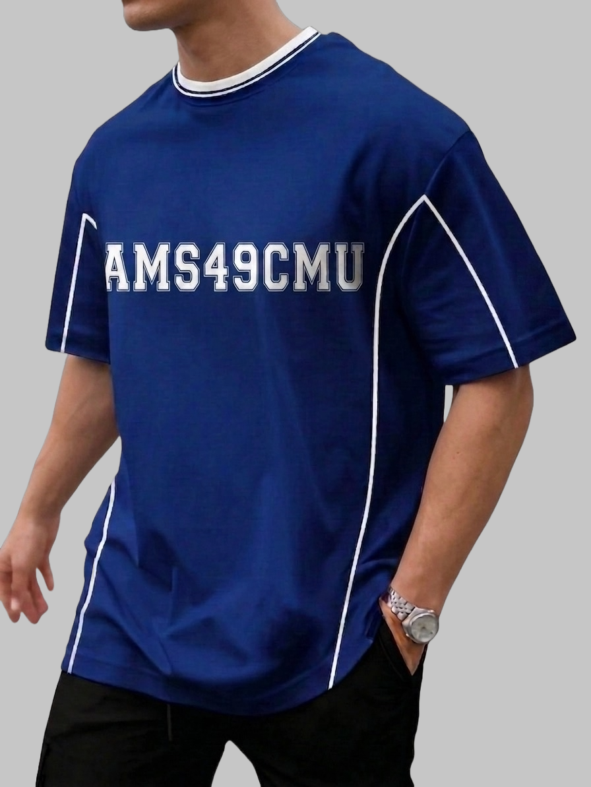
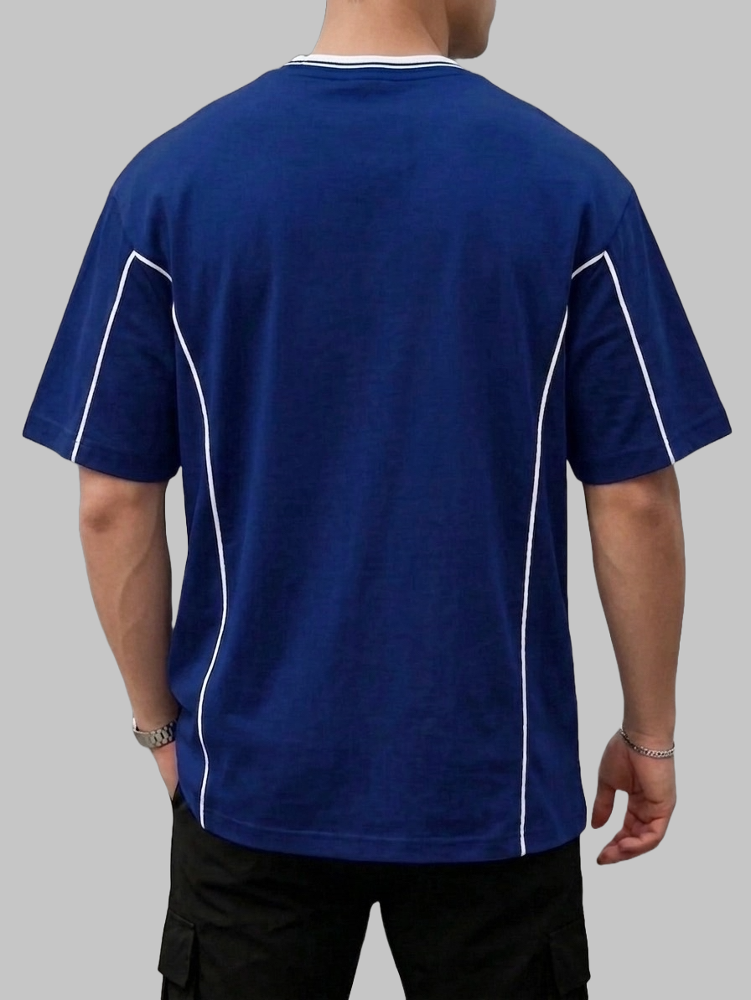

บริจาคและสั่งเสื้อรุ่น
เลือกเสื้อและระบุยอดที่อยากบริจาคก่อน ระบบจะรวมเป็นยอดเดียวให้ คุณโอนครั้งเดียวแล้วแนบสลิป ไม่ต้องบวกเลขเอง จะบริจาคอย่างเดียว ซื้อเสื้ออย่างเดียว หรือทำทั้งสองอย่างก็ได้ ไม่มีขั้นต่ำ
เงินสองก้อนนี้นับแยกกัน
เงินบริจาค เข้าคณะเทคนิคการแพทย์ มช. เต็มจำนวนที่ระบุ · ค่าเสื้อตัวละ 500 บาท (ไซส์ 2XL ขึ้นไปเพิ่ม 20–50 บาท) เป็นการซื้อของที่ระลึก ต้นทุนเสื้อรวมค่าจัดส่งแล้ว 400++ ต่อตัว รายได้ส่วนที่เหลือจะนำไปสมทบทุนบริจาคให้คณะฯ อีกทอดหนึ่ง
เงินบริจาค เข้าคณะเทคนิคการแพทย์ มช. เต็มจำนวนที่ระบุ · ค่าเสื้อตัวละ 500 บาท (ไซส์ 2XL ขึ้นไปเพิ่ม 20–50 บาท) เป็นการซื้อของที่ระลึก ต้นทุนเสื้อรวมค่าจัดส่งแล้ว 400++ ต่อตัว รายได้ส่วนที่เหลือจะนำไปสมทบทุนบริจาคให้คณะฯ อีกทอดหนึ่ง
กู้รายการที่คุณกรอกค้างไว้ในเครื่องนี้แล้ว —
เลือกเสื้อและระบุยอดบริจาค
ของที่ระลึก
เสื้อรุ่น AMS49CMU · เริ่มต้นตัวละ 500 บาท
- ราคา
- 500 บาทต่อตัว สำหรับไซส์ SS–XL รวมค่าจัดส่งแล้ว
ไซส์ใหญ่บวกเพิ่มต่อตัว — 2XL +20 · 3XL +30 · 4XL +40 · 5XL +50 - ไซส์
- SS – 5XL
- จำนวน
- สั่งได้ไม่จำกัด เลือกไซส์ผสมกันได้
- จัดส่ง
- คาดว่าจัดส่งได้หลังจากปิดยอดสั่งประมาณ 3 สัปดาห์


เงินบริจาคให้คณะเทคนิคการแพทย์ มช.
ตัวเลขเท่านั้น ไม่ต้องใส่ลูกน้ำ
ข้อมูลผู้บริจาค
ใช้กรณีสลิปไม่ชัดหรือยอดไม่ตรง
ไม่บังคับ — ช่วยกรรมการยืนยันว่าเป็นคนรุ่นเรา
ไม่บังคับ — กรรมการทักได้เร็วกว่าโทร
รายการนี้เป็นเงินบริจาคอย่างเดียว ไม่มีของต้องจัดส่ง — ไม่ต้องกรอกที่อยู่
ที่อยู่จัดส่งเสื้อ
ชื่อที่จะให้ขนส่งเรียกตอนเข้าส่ง
ขนส่งจะโทรหาเบอร์นี้ตอนเข้าส่ง
ใส่ให้ครบถึงระดับตำบล/แขวง
โอนยอดนี้ครั้งเดียว
เลขที่บัญชี · ธนาคารกรุงไทย สาขาเซ็นทรัล เชียงใหม่
666-1-17730-6
ชื่อบัญชี — เป็นบัญชีร่วม 2 ชื่อ
น.ส.ปิ่นปินันท์ ร่มโพธิ์ และ นายธเนศ ชัชวาลชัยทรัพย์
ตรวจชื่อปลายทางก่อนกดยืนยันทุกครั้ง
แอปธนาคารจะขึ้นชื่อทั้งสองท่าน ถ้าขึ้นชื่อเดียวหรือชื่ออื่น แปลว่าเลขบัญชีผิด กรุณาหยุดแล้วคัดลอกใหม่
แอปธนาคารจะขึ้นชื่อทั้งสองท่าน ถ้าขึ้นชื่อเดียวหรือชื่ออื่น แปลว่าเลขบัญชีผิด กรุณาหยุดแล้วคัดลอกใหม่
ไม่มี QR พร้อมเพย์ — บัญชีนี้เป็นบัญชีร่วมสองชื่อ ซึ่งผูกพร้อมเพย์ไม่ได้
จึงต้องพิมพ์ยอดเอง ใช้ปุ่ม “คัดลอกยอด” ด้านบนแล้ววางในแอปธนาคารจะปลอดภัยกว่าพิมพ์
รายการที่จะโอน
รวมที่ต้องโอน0 บาท
แนบสลิปให้กรรมการตรวจ
ยอดในสลิปต้องเป็น บาทพอดี
ไม่ต้องกรอกยอดเอง ระบบใช้ยอดที่คำนวณไว้
ดูจากสลิป ต้องตรงถึงระดับนาที
ลากไฟล์สลิปมาวาง หรือกดเพื่อเลือก
ต้องเห็น ยอดเงิน วันเวลา และ เลขบัญชีปลายทาง ครบ